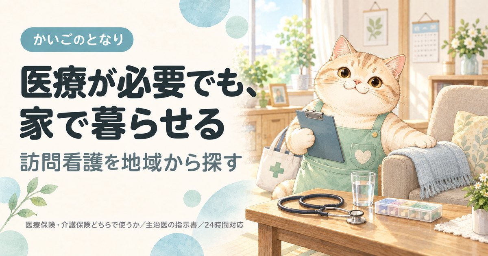

墨田区の訪問看護ステーション一覧｜選び方と始め方

東京都墨田区で訪問看護を探している方へ。区内にある約36件のステーションから20件を連絡先つきで掲載し、あわせて所在町域・運営法人・受付体制の内訳と、主治医の指示書から利用開始までの流れをまとめました。訪問看護は事業所選びより先に主治医への相談が要ります。
墨田区で訪問看護を探すとき、最初に押さえること
墨田区には訪問看護ステーションが約36件あります。数が限られるため、必要な医療処置に対応できるかを先に確認してください。訪問介護と違い、事業所選びより先に主治医の指示書が要ります。相談の順番を間違えると、ここで止まります。
①主治医（かかりつけ医・入院先）に「自宅で訪問看護を使いたい」と伝える → ②ステーションを決める → ③主治医が訪問看護指示書を出す → ④契約・初回訪問。入院中なら、退院支援・地域連携の窓口に相談するのが最短です。
墨田区の相談窓口は高齢者支援総合センター（区内8か所）です。墨田区では地域包括支援センターを「高齢者支援総合センター」と呼び、区内各地に設置しています。主治医が決まっていない場合や、どのステーションがよいか分からない場合は、まずここで相談できます。
医療保険と介護保険のどちらになるか、回数と時間の上限、訪問介護との違いは訪問看護を地域から探すにまとめています。墨田区に限らず全国共通の内容です。
墨田区の訪問看護ステーション一覧
墨田区内の訪問看護ステーションから20件を掲載しています（2026年9月時点）。区内には約36件のステーションがあり、全件は厚生労働省「介護サービス情報公表システム」で確認できます。掲載順は事業所の優劣を示すものではありません。
1ケアーズ墨東訪問看護リハビリステーション
- 所在地
- 東京都 墨田区 太平2-3-10-201
- 運営法人
- （同）ケアーズ墨東訪問看護リハビリステーション
- 電話
- 03-6240-4961
- FAX
- 03-6240-4962
- 電話受付
- 9:00〜18:00
- 休業日
- 土・日・祝・年末年始
- 事業所番号
- 1360790222
2リニエ訪問看護ステーションすみだ
- 所在地
- 東京都 墨田区 緑4-29-5 錦糸町若林ビル301
- 運営法人
- （株）リニエＲ
- 電話
- 03-5625-3201
- FAX
- 03-5625-3202
- 電話受付
- 9:00〜18:00
- 休業日
- 土・日・祝・年末年始
- 事業所番号
- 1360790156
3訪問看護ステーションすぴか
- 所在地
- 東京都 墨田区 亀沢1-21-8
- 運営法人
- （株）すぴか
- 電話
- 03-6411-5713
- FAX
- 03-6411-0079
- 電話受付
- 9:00〜18:00
- 休業日
- 年中無休
- 事業所番号
- 1360790016
4くれよん訪問看護リハビリステーション森下
- 所在地
- 東京都 墨田区 立川1-16-17 山田ビル101
- 運営法人
- （株）ＳＲメディケア
- 電話
- 03-5625-4581
- FAX
- 03-5625-4580
- 電話受付
- 9:00〜18:00
- 休業日
- 土・日・祝・年末年始
- 事業所番号
- 1360790297
5ＦＣＭ訪問看護ステーションすみだ
- 所在地
- 東京都 墨田区 東向島5-3-3 東向島ステーションプラザ209
- 運営法人
- （株）ふたばケアメディカル
- 電話
- 03-6657-0603
- FAX
- 03-6657-0604
- 電話受付
- 8:30〜17:30
- 休業日
- 年中無休
- 事業所番号
- 1360790347
6どすこい訪問看護リハビリステーション
- 所在地
- 東京都 墨田区 墨田4-1-2 レモンヤビル2階Ｂ
- 運営法人
- （同）コネクトライフ
- 電話
- 03-6381-3501
- FAX
- 03-6381-3502
- 電話受付
- 8:30〜18:00
- 休業日
- 土・日・年末年始
- 事業所番号
- 1360790487
7かのん訪問看護ステーションすみだ
- 所在地
- 東京都 墨田区 押上2-30-7 コンチェルト押上1階
- 運営法人
- （株）双泉メディカルサポート
- 電話
- 03-6657-0020
- FAX
- 03-6657-0031
- 電話受付
- 9:00〜18:00
- 休業日
- 土・日・祝・年末年始
- 事業所番号
- 1360790339
8ＢＥＡＭ訪問看護ステーション
- 所在地
- 東京都 墨田区 向島3-40-7 ホームアダージョ203
- 運営法人
- （株）ＢＥＡＭ
- 電話
- 03-6326-9755
- FAX
- 03-6824-7890
- 電話受付
- 10:00〜19:00
- 休業日
- 祝・年末年始
- 事業所番号
- 1360790453
9やまだ訪問看護ステーション
- 所在地
- 東京都 墨田区 石原2-20-5
- 運営法人
- （社医）正明会
- 電話
- 03-5819-7636
- FAX
- 03-5819-7635
- 電話受付
- 8:30〜17:00
- 休業日
- 日・祝・年末年始
- 事業所番号
- 1367199086
10訪問看護ステーションさくら 本所吾妻橋
- 所在地
- 東京都 墨田区 東駒形3-4-8
- 運営法人
- （株）ネクサスメディケア
- 電話
- 03-5637-7320
- FAX
- 03-5637-7321
- 電話受付
- 8:45〜17:45
- 休業日
- 土・日・祝・年末年始
- 事業所番号
- 1360790321
11看護クラーク東日本橋
- 所在地
- 東京都 墨田区 立花1-34-1
- 運営法人
- （株）シーユーシー・ホスピス
- 電話
- 03-6657-1317
- FAX
- 03-6657-1318
- 電話受付
- 9:00〜17:00
- 休業日
- 年中無休
- 事業所番号
- 1360290165
12あいらく訪問看護ステーション 錦糸町
- 所在地
- 東京都 墨田区 太平1-11-1 若葉ビル1階
- 運営法人
- （株）Ｖｉｖｉ Ｌｕｋｅ
- 電話
- 03-6381-3405
- FAX
- 03-6381-3406
- 電話受付
- 9:00〜18:00
- 休業日
- 年中無休
- 事業所番号
- 1360790552
13つむぎ訪問看護ステーション
- 所在地
- 東京都 墨田区 東向島1-17-7 地蔵坂ホームズ1階
- 運営法人
- 東京スマイル（株）
- 電話
- 03-6657-3020
- FAX
- 03-6657-3020
- 電話受付
- 8:30〜17:00
- 休業日
- 土・日・祝・年末年始
- 事業所番号
- 1360790313
14すみれ訪問看護ステーション
- 所在地
- 東京都 墨田区 業平2-9-9-3階
- 運営法人
- （医財）健和会
- 電話
- 03-5619-5510
- FAX
- 03-5619-5513
- 電話受付
- 9:00〜17:00
- 休業日
- 土・日・祝・年末年始
- 事業所番号
- 1360790255
15賛育会訪問看護ステーション
- 所在地
- 東京都 墨田区 太平3-18-5 千代津ビル1階
- 運営法人
- （社福）賛育会
- 電話
- 03-3622-9188
- FAX
- 03-6853-9003
- 電話受付
- 9:00〜17:30
- 休業日
- 土・日・祝・年末年始
- 事業所番号
- 1367191950
16ツクイ墨田訪問看護ステーション
- 所在地
- 東京都 墨田区 押上1-1-2 東京スカイツリーイーストタワー15階
- 運営法人
- （株）ツクイ
- 電話
- 03-5619-5440
- FAX
- 03-5619-2333
- 電話受付
- 8:30〜17:30
- 休業日
- 土・日・祝・年末年始
- 事業所番号
- 1360790438
17訪問看護ステーション みけ
- 所在地
- 東京都 墨田区 向島2-10-5 第5安井ビル1階
- 運営法人
- （株）ふれすか
- 電話
- 03-3626-2317
- FAX
- 03-3626-2318
- 電話受付
- 9:00〜17:00
- 休業日
- 土・日・祝・年末年始
- 事業所番号
- 1360790511
18墨田区医師会立訪問看護ステーション
- 所在地
- 東京都 墨田区 業平1-7-25
- 運営法人
- （公社）墨田区医師会
- 電話
- 03-3626-6827
- FAX
- 03-3626-6872
- 電話受付
- 9:00〜17:00
- 休業日
- 土・日・祝・年末年始
- 事業所番号
- 1367191489
19訪問看護ステーション コルディアーレ墨田
- 所在地
- 東京都 墨田区 緑4-20-9 宮野ビル6階
- 運営法人
- （株）ＪＳＨ
- 電話
- 03-6284-0934
- FAX
- 03-6284-0935
- 電話受付
- 9:00〜18:00
- 休業日
- 日
- 事業所番号
- 1360790560
20ラック訪問看護ステーションすみだ
- 所在地
- 東京都 墨田区 京島1-47-17-2階
- 運営法人
- （株）ラックコーポレーション
- 電話
- 03-5655-7505
- FAX
- 03-5655-7525
- 電話受付
- 9:00〜18:00
- 休業日
- 土・日・祝
- 事業所番号
- 1360790032
上記20件は、2026-09-21に墨田区および各事業者の公表情報で確認した内容です。営業時間・対応エリア・空き状況は変動しますので、連絡の前に必ず公式情報をご確認ください。掲載内容の訂正・削除のご依頼は運営者までご連絡ください。
掲載20事業所の内訳
墨田区内で掲載している20事業所を、所在地・運営法人・受付体制の3つの軸で集計しました。事業所ごとの詳細は上の一覧をご覧ください。
所在町域
訪問看護も、ステーションから通える範囲が実質的な対応エリアになります。墨田区内は26の町域に分かれています。緊急時にどれだけ早く来られるかは距離に左右されるため、自宅に近い町域から当たるのが確実です。
| 町域 | 掲載事業所 |
|---|---|
| 太平 | ケアーズ墨東訪問看護リハビリステーション、あいらく訪問看護ステーション 錦糸町、賛育会訪問看護ステーション |
| 向島 | ＢＥＡＭ訪問看護ステーション、訪問看護ステーション みけ |
| 押上 | かのん訪問看護ステーションすみだ、ツクイ墨田訪問看護ステーション |
| 東向島 | ＦＣＭ訪問看護ステーションすみだ、つむぎ訪問看護ステーション |
| 業平 | すみれ訪問看護ステーション、墨田区医師会立訪問看護ステーション |
| 緑 | リニエ訪問看護ステーションすみだ、訪問看護ステーション コルディアーレ墨田 |
| 亀沢 | 訪問看護ステーションすぴか |
| 京島 | ラック訪問看護ステーションすみだ |
| 墨田 | どすこい訪問看護リハビリステーション |
| 東駒形 | 訪問看護ステーションさくら 本所吾妻橋 |
| 石原 | やまだ訪問看護ステーション |
| 立川 | くれよん訪問看護リハビリステーション森下 |
| 立花 | 看護クラーク東日本橋 |
運営法人の種別
掲載20件のうち株式会社が14件と最も多く、医療法人は1件です。訪問看護では、母体が医療機関かどうかで主治医との連携のしやすさが変わることがあります。
| 法人の種別 | 件数 | 傾向 |
|---|---|---|
| 株式会社 | 14件 | 全国展開の事業所はサービスが標準化され自費プランも整う。地域密着の小規模は融通が利く |
| その他 | 2件 | 上記にあてはまらない法人格 |
| 合同会社 | 2件 | 近年に開設された事業所が多く、新しい体制で運営している |
| 医療法人 | 1件 | 訪問看護や在宅医療と連携しやすく、医療的ケアが必要になったときに強い |
| 社会福祉法人 | 1件 | 特別養護老人ホームなどを併設していることが多く、住み替えまで見据えて相談しやすい |
電話の受付体制
掲載20件のうち、年中無休が4件、土日も電話を受けるところを含めると5件です。訪問看護では夜間・休日に連絡がつくかが在宅を続けられるかどうかを左右します。下の表は電話の受付体制であり、24時間の緊急対応体制（加算）の有無とは別ですので、契約前に必ず確認してください。
| 受付体制 | 件数 | こんな方に |
|---|---|---|
| 年中無休 | 4件 | 急な依頼や体調の変化に、曜日を気にせず相談したい方 |
| 土日も受付 | 1件 | 平日は仕事で電話できない家族が窓口になる場合 |
| 平日中心 | 15件 | 日中に連絡が取れる方。土日の緊急連絡先は別途確認を |
受付時間は最も早い事業所で8:30から、最も遅い事業所で19:00までです。いずれも電話の受付時間であり、訪問できる時間帯とは別です。
問い合わせの前に確認しておくこと
墨田区のステーションに電話をかける前に、次の4点を手元に用意しておくと話が早く進みます。
- 主治医の名前と医療機関名指示書を書いてもらう医師が決まっているかどうかで、ステーション側の動き方が変わります。未定ならその旨を伝えてください。
- 必要な医療処置点滴、インスリン、たんの吸引、床ずれの処置、胃ろう、在宅酸素、人工呼吸器、ストーマなど。対応できるかはステーションごとに違います。
- ご自宅の町名・番地同じ墨田区内でも対応する町域が違います。緊急時の到着時間にも直結します。
- 要介護認定の状況認定済みなら要介護度を、申請中ならその旨を。未申請でも、医療保険で先に始められる場合があります。
よくある質問
墨田区で訪問看護を使うには、まず何をすればいいですか？
主治医に「自宅で訪問看護を使いたい」と伝えるのが最初の一歩です。訪問看護は主治医の指示書がないと始められないため、墨田区のステーションに直接連絡してもそこで止まります。入院中なら退院支援の窓口、主治医が決まっていなければ高齢者支援総合センターが相談先です。
墨田区には訪問看護ステーションが何件ありますか？
2026年9月時点で、介護情報サイトの掲載ベースで約36件のステーションが墨田区内にあります。本ページではそのうち20件を連絡先つきで掲載しています。全件は厚生労働省「介護サービス情報公表システム」で確認できます。
墨田区の掲載事業所は、どこを見て絞り込めばいいですか？
まず必要な医療処置に対応できるかで絞り、次に距離で絞るのが順番です。墨田区の掲載20件では年中無休が4件、土日も電話を受けるところを含めると5件あります。そのうえで、ご自宅の町名を伝えて墨田区内の対応エリアに入っているかを確認してください。
墨田区で夜間や休日に急変したら、来てもらえますか？
24時間の緊急対応体制をとっているステーションなら、連絡して必要と判断されれば訪問してもらえます。ただしこれは加算のかかる体制で、墨田区内でもすべてのステーションが対応しているわけではありません。上の受付体制の表は電話の受付時間であり、緊急対応の可否とは別ですので、契約前に必ず確認してください。
医療保険と介護保険のどちらになりますか？
要介護認定を受けていれば原則として介護保険、受けていなければ医療保険です。ただし国が定める疾病等に当てはまる場合や、急に状態が悪くなって特別訪問看護指示書が出た場合は、認定があっても医療保険になります。墨田区に限らず全国共通の分岐で、判断は主治医とステーションが行います。
墨田区で訪問介護（ヘルパー）と両方使えますか？
使えます。医療的なケアは訪問看護、身体介護や家事は訪問介護と役割が分かれており、両方を併用する方は珍しくありません。墨田区の訪問介護事業所は同じサイト内にまとめています。介護保険で使う場合は、どちらも区分支給限度基準額の範囲内で組むことになります。
墨田区の町域一覧（対応エリアの目安）
墨田区の町域は26。五十音では9行にわたり、最も多いのはか行の5件です。掲載事業者の対応範囲は町域単位で分かれているため、問い合わせのときは「墨田区吾妻橋」のように町名まで伝えてください。
- 吾妻橋
- 石原
- 押上
- 亀沢
- 菊川
- 京島
- 錦糸
- 江東橋
- 墨田
- 太平
- 立花
- 立川
- 千歳
- 堤通
- 業平
- 東駒形
- 東墨田
- 東向島
- 文花
- 本所
- 緑
- 向島
- 八広
- 横網
- 横川
- 両国
※町域ごとの事業者ページは、掲載できる事業者が3件以上そろった町域から順次公開します。
墨田区の他のサービスを探す
近隣エリアの訪問看護
- 厚生労働省「介護事業所・生活関連情報検索（介護サービス情報公表システム）」
- 墨田区「高齢者支援総合センター一覧」
- 厚生労働大臣が定める疾病等（訪問看護で医療保険が適用される範囲）
- 日本郵便 郵便番号データにもとづく墨田区の町域一覧
- 区内事業所数の目安：ハートページナビ 掲載件数（2026年9月時点）
最終確認日：2026-09-21／制度・料金は改定される場合があります。ご利用前に各窓口・各事業者で最新情報をご確認ください。